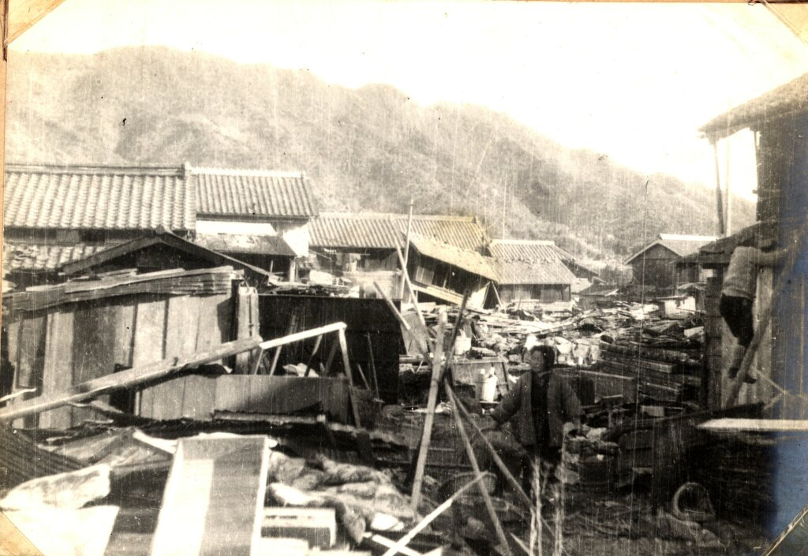

Vierzehnter Tag. Zur Stunde des Wildschweins (22 Uhr) gab es ein großes Erdbeben. Im ganzen Land haben Männer und Frauen laut geschrien, und konnten nicht Osten von Westen unterscheiden. Berge fielen und Flüsse strömten hervor. Die Amtsgebäude der Provinzen und Distrikte, die Scheunen und Häuser der Bürger, die Tempel, Pagoden und Schreine wurden in Zahlen zerstört, die jede Schätzung übertreffen. Dadurch wurden viele Menschen und Tiere verletzt oder sind gestorben. Die heißen Quellen Iyos sind ausgetrocknet und haben aufgehört zu fließen. In der Provinz Tosa wurden 500,000 shiro (etwa 30600km²) an kultiviertem Land von dem Meer verschluckt. Die alten meinen, dass es nie zuvor ein solches Erdbeben gab. In dieser Nacht hat man ein grollendes Geräusch wie das von Trommeln aus dem Osten gehört. Manche sagen, dass die Insel Idzu an zwei Seiten, im Norden und im Westen um 300 rods vergrößert wurde und eine neue Insel geformt wurde. Das trommelähnliche Geräusch war das der Götter, welche diese Insel erbaut haben.
Japans nächstes Megabeben
Einleitung Die erste Warnung
Im August 2024 löste ein Erdbeben nahe Miyazaki eine offizielle Warnung vor einem möglichen Megabeben am Nankai-Trog aus. Zum ersten Mal sprach die japanische Wetterbehörde öffentlich von einer erhöhten Wahrscheinlichkeit für das gefürchtete Nankai-Megathrust-Erdbeben.
Im schlimmsten Szenario könnten entlang der Pazifikküste Schäden von bis zu 213 Billionen Yen entstehen (umgerechnet mehr als eine Billion Euro). Bis zu 230.000 Menschen könnten ihr Leben verlieren.
Wenige Tage später wurde die Warnung wieder aufgehoben. Doch die Gefahr bleibt bestehen, denn der Spannungsaufbau entlang des Nankai-Trogs schreitet weiter voran.
Seismologen gehen davon aus, dass in den kommenden Jahrzehnten ein Beben der Magnitude 8 bis 9 möglich ist. Die Wahrscheinlichkeit für ein solches Ereignis liegt nach aktuellen Schätzungen bei rund 70 bis 80 Prozent innerhalb der nächsten 30 Jahre.
Diese Seite erklärt, wie ein solches Megabeben entsteht, welche historischen Vorbilder es gibt und wie sich Japan auf das nächste große Erdbeben vorbereitet.

徳島地方気象台
Das Nankai Megathrust Erdbeben
Megathrust-Erdbeben entstehen an Subduktionszonen. Dort wo sich eine Erdplatte unter eine andere schiebt. Vor der Südwestküste Japans verläuft eine dieser Zonen: der Nankai-Trog.
Hier taucht die Philippinische Platte unter die Amur-Platte, einen Teil der Eurasischen Platte. Doch die Platten gleiten nicht gleichmäßig aneinander vorbei. Sie verhaken sich. Während die Philippinische Platte sich weiter nach Norden bewegt, wird der Rand der darüberliegenden Platte mitgezogen. Über Jahrzehnte und Jahrhunderte baut sich so enorme Spannung auf.
Irgendwann überschreitet diese Spannung die Belastungsgrenze des Gesteins. Dabei kommt es zum Riss, bei dem die verhakten Bereiche der Platte ruckartig zurückspringen. Innerhalb weniger Sekunden wird die gespeicherte Energie freigesetzt. Hierbei entstehen Erdbeben der Magnitude 7, 8 und höher. Wird dabei der Meeresboden angehoben oder abgesenkt, entsteht zusätzlich ein Tsunami.
Der Nankai-Trog ist in fünf Segmente unterteilt, bezeichnet mit A bis E. Diese lassen sich grob drei Zonen zuordnen: Tokai, Tonankai und Nankai. Die Segmente können einzeln oder kaskadenartig kurz hintereinander reißen. So folgt häufig auf ein Beben innerhalb von Stunden bis Jahren ein weiteres in einem benachbarten Abschnitt. In seltenen Fällen brechen mehrere Segmente gleichzeitig.
Als 1707 beim Hōei-Erdbeben nahezu alle Abschnitte gleichzeitig versagten, erschütterte eines der stärksten bekannten Beben Japans das Land. Wenige Wochen später kam es zur Eruption des Fuji. Es besteht die Möglichkeit, dass das Beben diesen Ausbruch auslöste, doch wissenschaftlich ist das noch nicht abschließend geklärt.
Solche Großbeben wiederholen sich in Abständen von etwa 90 bis 200 Jahren. Ein besonders hohes Risiko geht derzeit vom Segment E aus, wo es seit 1854 kein großes Beben mehr gab.
Die besondere Gefahr liegt in der Lage des Trogs. Dieser verläuft quasi parallel zu Japans dicht besiedelter Ostküste. Millionenstädte wie Tokio, Yokohama und Osaka könnten von Erdbeben und Tsunami betroffen sein.
Historische Vorfälle
Seit Beginn der japanischen Geschichtsschreibung werden die Erdbeben am Nankai-Trog dokumentiert. Die Aufzeichnungen reichen bis ins siebte Jahrhundert zurück und zeigen ein wiederkehrendes Muster.
Aus Chroniken, Tempelberichten und später aus wissenschaftlichen Untersuchungen lässt sich rekonstruieren, in welchen Abständen große Beben auftraten, welche Regionen besonders betroffen waren und welche Folgeschäden sie verursachten. Neben den Erschütterungen selbst werden immer wieder Brände, einstürzende Gebäude, herabfallende Trümmer und vor allem Tsunamis beschrieben, die Küstenregionen verwüsteten.
Die alten Aufzeichnungen helfen uns bis heute, das Risiko besser zu verstehen. Sie zeigen, dass sich die Beben am Nankai-Trog ungefähr alle 90 bis 200 Jahre wiederholen, was auch von der geologischen Forschung unterstützt wird.
Insbesondere seien hier das 1707 Hōei-Erdbeben und das Tōnankai-Erdbeben von 1944 hervorgehoben. Das Beben von 1707 stellt einen Extremfall dar. Fast alle Segmente des Trogs rissen gleichzeitig und lösten gewaltige Beben aus. Zusätzlich kam es wenige Wochen später zur Eruption des Mount Fuji. Die Ereignisse von 1944 und 1946 sind die jüngsten Megathrust-Erdbeben. Sie sind die einzigen welche fotografisch dokumentiert werden konnten. Das Beben von 1944 traf das Land, während es im Zweiten Weltkrieg stand. Aufgrund des Ausnahmezustands wurden teils Sicherheitsstandards ignoriert und Hilfeleistung unterlassen, weshalb betroffene Städte besonders starke Schäden erlitten.
Bevor im nächsten Abschnitt die aktuellen Risiken eines zukünftigen Megathrust-Erdbebens beleuchtet werden, lohnt sich also ein Blick auf diese historischen Ereignisse, denn sie geben Hinweise darauf, was sich wiederholen könnte.
-
684
Hakuho-Erdbeben
-
887
Ninna-Nankai-Erdbeben
Aufzeichnungen im Nihon Sandai Jitsuroku (Authentische Aufzeichnungen zu drei Epochen in Japan) berichten von einem starken Erdbeben, welches in der damaligen Hauptstadt Kyoto gewütet hat und zwahlreiche staatliche Gebäude sowie Wohnhäuser zerstört hat, wobei viele Menschen gestorben sind. Das Erdbeben konnte im gesamten damals noch enger an Kyoto anliegenden Staatsgebiet gespürt werden und hat dort ebenfalls Schäden verursacht. In der Küstenregion Settsu kam es zu durch einen Tsunami zu zahlreichen Ertrinkungstoten. Anschließend wurden bis zum Ende des Monats Nachbeben verzeichnet.
Zusätzlich kam es aber auch im Inland zu Überflutungen. Ausgelöst durch einen Bergsurz des Yatsugatake-Gebirges entstand ein Dammsee im Fluss Ōtsuki, welcher im darauffolgenden Jahr brach.
Dieses Erdbeben weist einige typische Charakteristiken des Nankai Erdbebens nicht auf, weshalb die Theorie im Raum steht, dass es in einer anderen Verwerfung entstanden ist. Beide Theorien können aber nicht alle Umstände erklären.
-
1096
Eicho-Erdbeben
In Munetada Fujiwaras Tagebuch Chūyūki (中右記) werden die Schäden des Erdbebens detailliert dargestellt. Er schreibt, dass mehrere Tempel beschädigt wurden und die riesige Glocke des Tōdai-ji herrunterfiel und der Korridor des Yakushi-ji eingesürzt ist. Im Hōjō-ji wurden zwei Pagoden beschädigt und die Spitze (sōrin) eines dritten ist umgefallen. Auch in Kyoto kam es zu großer Zerstörung. Der Kaiser Horikawa musste aus seinem Palast fliehen und hat Zuflucht auf dem Bot in seinem Gartenteich gesucht. In Omi ist die Seta Brücke kollabiert.
Auch beschreibt ふじわら の もろみちin dem 後二条師通記, dass die Erde sechsmal zu dieser Zeit erzitterte. Im Bericht über die Region Saruga, wird festgehalten, dass 400 Schreine, Tempel und Häuser weggespült wurden. Weitere Nachrichten aus der Zeit erzählen von Tsunamischäden in der heutigen Stadt Tsu in der Mie Prefäktur. In den zwei Jahren nach dem Eicho-Erdbeben folgten mehrere Nachbeben.
-
1099
Kōwa-Nankaido-Erdbeben
Ob es sich bei diesem Erdbeben wirklich um ein Nankai Erdbeben handelt, ist umstritten. Es existieren nicht viele Quellen, die von diesem Erdbeben berichten und die die es tun sind in Teilen nicht vertrauenswürdig. Es steht die Theorie im Raum, dass statdessen das Kaho-Erdbeben im Jahre 1096 in der Nanakai Verwerfung entstand. Laut dem 後二條師通記、 ist das große Tor und Korridor des Kofukuji (興福寺) eingestürzt. 太子伝古今目録抄 berichtet davon, dass neben anderen Schäden der Korridor des Shitennoji (四天王寺(してんのうじ)) in der Region Setsu zerstört wurde. In Kyoto wurden diese Erdbeben als schweres Erdbeben bezeichnet. Genauere Berichte gibt es jedoch nicht.
-
1360
Eventuelles Erdbeben
Über das Erdbeben im Jahr 1360 ist nicht viel bekannt und die Chance ist hoch, dass es sich nicht zugetragen hat. Das Erdbeben soll eine Stärke von 7.8 gehabt haben. Der Tsunami habe sich von Owase bis Hyogo erstreckt. Beide sollen viele tote und eine große Zerstörung zurückgelassen haben.
-
1361
Shōhei-Erdbeben
Über das Shōhei-Erdbeben (auch Kōan-Erdbeben genannt) weiß man, dass es die Haupthalle, des Shitennoji Temples zerstört hat, wodurch 5 Menschen zu Tode gekommen sind. Darüber hinaus hat das Erdbeben viele Tempel und Häuser stark beschädigt. Der darauffolgende Tsunami hat zudem die Regionen Settsu, Tosa und Awa verwüstet. Insbesondere die Stadt Yukiminato in Awa, in der 17000 Häuser und über 60 Menschen von der Welle weggespült wurden, war stark betroffen.
Auf das Erdbeben folgten zahlreiche nachbeben.
-
1498
Meiō-Erdbeben
Das Meiō-Erdbeben hat die Präfekturen Wakayama, Nara, Mie, Aichi, Shizouka, Yamanashi, Kanagawa, Tokyo, Saitama, Chiba, Gumma, Tochigi, Ibaraki und Fukushima getroffen. Der eigentliche Schaden wurde jedoch von dem darauffolgenden Tsunami angerichtet.
Die unten genannten Zahlen stammen aus historischen Quellen und sind Teils widersprüchlich. Todeszahlen reichen von einigen hunderten bis zu 41000.
In Ominato wurden 1000 Häuser weggespült und 500 Menschen sind verstorben. Die Landzunge, die den Hamana See vom Meer trennte, wurde durchbrochen, was bis heute so geblieben ist. In Kamakura erreichte der Tsunami den Daibutsu Tempel und hat 200 getötet. Zudem hat die Welle den Tempel zerstört, die den großen Kamakura Buddha behaust hat und die 93 Tonnen Statue verschoben. Die Statue bleibt intakt, doch steht sie jetzt im Freien.
Auf der Insel Hachijo ist eine Person wegen des Tsunamis gestorben. 19 Hektar Land in der Region Tsu wurden im Meer versenkt und 1000 Häsuer wurden weggespült. In Ohiminato fielen 5000 Menschen der 10m hohen Welle zu Opfer. In Nishina ist die Welle bis zu 2km ins Landesinnere gedrungen. In Yaizu sollen 26000 Menschen gestorben sein.
-
1605
Keichō-Erdbeben
Vom Keichō-Erdbeben wurde zunächst angenommen, dass das eigentliche Beben kaum Schäden verursacht hätte, da nur wenige Schriftstücke von diesem Berichten und einzig der Tsunami für größere Verwüstung gesorgt habe. Daraus wurde geschlossen, dass Städte wie Tokio erdbebensicher seien.
Diese Ansichten wurden zwischenzeitlich widerlegt. Heute weiß man, dass viele Aufzeichnungen in der chaotischen politischen Lage der Zeit und der Zerstörung von Tempelanlagen verloren gingen. Das Ausmaß dieses Erdbebens ähnelt den anderen hier gelisteten.
Bei dem Keichō-Erdbeben sind in kürzester Zeit ein Tokai- und ein Nankai-Erdbeben aufeinander gefolgt (Epizentren: 34.3 North, 140.3 East; 33 North, 134.9 East.). Die lückenhaften Aufzeichnungen beschreiben starke Beben in den Tōkai und Nankai Gebieten, die örtliche Erdrutsche und Gebäudeschäden verursacht haben. Auf den Awaji-Inseln sind mehrere Tempel und Häuser eingestürzt.
Der Tsunami hat den Osten der Boso Halbinsel die Küstengebiete in der Bucht von Tokio, die Küsten der Präfekturen Kanagawa und Shizuoka und die Südöstliche Küste der Kochi Präfektur haben besonders hart getroffen. Je nach Region haben die drei bis zehn Meter hohen Wellen hunderte von Häusern mit sich gerissen und ebenso viele Menschen ertränkt. Insgesamt sind 5000 Menschen dem Tsunami zu Opfer gefallen.
In Tawara in Atsumi und Kakegawa hat die Welle ganze Burgen zerstört.
-
1707
Hōei-Erdbeben
Bei dem Hōei-Erdbeben wird vermutet, dass es zum Riss entlang des gesamten Grabens kam, oder die Tōkai- und Nankai Abschnitte fast zeitgleich gerissen sind. Zufolge war ein Erdbeben, welches sich von der Präfektur Shizuoka bis zum westlichen Ende von Shikoku erstreckte. Zwar lässt sich der gesamte Schadensausmaß nicht exakt bestimmen, doch wird davon ausgegangen, dass Beben und Tsunami ungefähr 20000 Tote, 60000 zerstörte und 20000 weggeschwemmte Häuser, und 30000 beschädigte Häuser hinterließen. Zusätzlich gingen 3000 Schiffe und 45000 Tonnen an Reisernten verloren.
Das Erbeben war ebenfalls Auslöser für Hebungen und Senkungen des Landes von bis zu zwei Metern und einem der größten Erdrutsche in der Geschichte Japans.
Tsunamis haben sich von der Bōsō-Halbinsel bis bis Kyūshū ausgestreckt. Vorallem die Küstem wurden hart getroffen. So wurden in der Region Tosa mehr als die Hälfte der Küstensiedlungen vollständig zerstört.
49 Tage nach dem Erdbeben kam es zu dem bislang letzten Ausbruch des Fujis. Es wird angenommen, dass des Hōei-Erdbeben eine Rolle bei der Eruption des Vulkanes spielte, obwohl noch diskutiert wird, wie groß diese Rolle war. Die vom Vulkan ausgespuckte Asche hat Selbst noch das einhundert Kilometer entfernte Edo (heutiges Tokio) in einer mehrere Zentimeter dicken Schicht bedeckt. Asche und Geröll des Ausbruchs hatten Überflutungen von Flüssen, Landrutsche und die Ausfälle von Ernten sowie die resultierenden Hungersnöte zur Folge. Genauere Zahlen zum Schaden bleiben jedoch unbekannt. Schätzungen der japanischen Regierung besagen, dass ein heutiger Ausbruch des Vulkans das Land etwa 26 Milliarde € kosten könnte.
-
1854 - 1860
Ansei-Erdbeben
Im 19. Jahrhundert wurde Japan stark von einer Serie von Erdbeben genannt Ansei-Erdbeben verwüstet. Zu diese gliedern sich ein Tōkai-Erdbeben und ein Nankai-Erdbeben im Jahre 1854 ein. Doch im vergleich zu den restlichen Beben der Zeit, haben die Nankai und Tokai Erdbeben relativ wenig Schaden angerichtet.
Tōkai-Erdbeen
Zuerst kam es zum Riss in der Tōkai-Region. Das resultierende Erdbeben war in Zentral Japan spürbar und hat Shizuoka besonders stark getroffen. Bereits 15 Minuten nach dem Beben erreichten die bis zu 10m (und in einem Fall 20m) hohen Tsunami Japan und verwüsteten die Küsten von der Boso Halbinsel bis nach Tosa. Die Region Izu wurde besonders hart von dutzenden Wellen getroffen. In der dort liegenden Stadt Shimoda wurden 840 Häuser zerstört und 122 Menschen verloren ihr Leben. Das davon westlich liegende Dorf Iruma wurde vollkommen zerstört. Der Tsunami hinterließ an dessen Stelle eine 10m hohe Sand Ablagerung, auf der das Dorf später neu aufgebaut wurde. Zudem sind in einigen Orten Feuer ausgebrochen, welche hunderte Häuser niederbrannten.
Nankai-Erdbeben
Etwa dreißig Stunden nach dem Tōkai-Erdbeen kam es zum Riss im Nankai-Segment, welches deutlich stärker war als sein Vorgänger. Verglichen mit dem Tōkai-Erdbeen war das betroffene Gebiet dieses Mal 3-mal größer. Ebenso hat dieses Erdbeben die dreifache Menge an Häusern zerstört und das fünffache an Menschenleben gefordert. Da dieses Erdbeben abends während des Winters stattfand, haben die Feuer, welche in den meisten Haushalten zum Kochen oder Heizen entfacht waren, zu vielen Bränden geführt. Besonders hart haben diese Brände die Städte Kochi, Nakamura und Sukumo getroffen.
Der Tsunami, der dieses Erdbeben begleitete, war ebenfalls stärker als der am vorherigen Tag. Im Westen der Kii Halbinsel haben bis zu 16m hohe Wellen die Küsten erreicht. In der Tosa Bucht waren die Wellen generell doppelt so hoch wie am Vortag. Trotzdem war die Anzahl an Toten für ein Erdbeben dieses Ausmaßes relativ gering, weil die Bewohner der Küstenregionen ihre Häuser aufgrund des Bebens am vorherigen Tage verlassen haben.
Eine bekannte Geschichte handelt von Goryō Hamaguchi, welcher früh die Gefahr eines Tsunamis realisierte und den anderen Bewohnern zur Evakuation auf einen nahegelegenen Berg brachte. Dabei befahl er das Anzünden von ausgetrockneten Reispflanzen, um durch das Feuer den Leuten den Weg zu weisen. Durch diesen Einsatz konnten 90% der Anwohner gerettet werden.
Eine genaue Angabe zu den verursachten Schäden ist schwierig, da die berichteten Schadenszahlen weit Auseinanderliegen. So wird in einem Fall beispielsweise angegeben, dass das Tōkai-Erdbeen 8000 Häuser zerstörte, während eine andere von 30000 sprechen. Auch ist es schwer zu unterscheiden welches der beiden Erdbeben für welchen Schaden verantwortlich ist.
Für die beiden Erdbeben werden Schäden von 20000 zerstörten, 15000 weggespülten und 6000 verbrannten Häusern und 3000 toten, von denen die meisten aufgrund des Tsunamis verstorben sind, angegeben.
-
1944
Tōnankai-Erdbeben
Das Tōnankai-Erdbeben hat vor allem die Präfekturen Mie, Aichi und Shizuoka auf und neben der Kii Halbinsel getroffen. Küstenstädte wie Shingu wurde zusätzlich von dem Tsunami verwüstet. Jedoch hat die Kraft des Bebens mit Distanz relativ stark abgenommen, sodass bereits im Westen Kiis keine schweren Schäden berichtet wurden. Auch resultierte das Beben nur in kleinere Brände, da zu dieser Zeit wenige Häuser einstürzten und in ihnen nur wenige Feuer zum Heizen genutzt wurden. Trotzdem sind durch die Katastrophe insgesamt 1223 Menschen gestorben und 17000 Häuser eingestürzt. Der Tsunami hat 3000 weitere Häuser weggespült.
In den Städten Hanada und Nagoya ist jeweils eine Fabrik eingestürzt, welche Teile für die japanische Luftwaffe produzierte. Aufgrund des Arbeitermangels wurde ein Großteil der Arbeitsplätze dieser Fabriken, mit Kindern aus lokalen Schulen besetzt. Die ehemaligen Textilfabriken, wurden für den Krieg umgebaut. Um dafür Platz freizuräumen wurden einige Pfeiler entfernt, welche für die Erdbebenresistenz der Gebäude notwendig waren.
Das Erdbeben und Fälle wie dieser wurden von dem Staat streng geheim gehalten, um den Alliierten keine Informationen über kritische Infrastruktur zukommen zu lassen. Deshalb wurde die Berichterstattung in Zeitungen auf wenige Zeilen beschränkt, die keine Angaben zu Schäden gemacht haben oder die Sachlage verzerrten. Manche Publikationen haben unter Vorwänden wie beschädigten Druckern, keine Ausgaben in diesem Zeitraum veröffentlicht. Zusätzlich wurde den Betroffenen befohlen keine Informationen über die Zerstörung weiterzugeben, wodurch die Städte insoliert wurden und ihnen die Katastrophenhilfe verwehrt blieb. Diese Methoden blieben jedoch ineffektiv. Das Erdbeben konnte Seismographen in mehreren Ländern aufgezeichnet werden und dessen Auswirkungen, wurde in Bildern der amerikanischen Luftaufklärung festgehalten. Diese Bilder wurden später als Flugblätter von Bombern über japanische Städte verteilt.
-
1946
Showa-Nankai-Erdbeben
Das Showa-Nankai-Erdbeben war ein weitflächiges Erdbeben, welches noch weit von seinem Epizentrum bis in Hokkaido gespürt werden konnte. Dennoch wurden hauptsächlich Zentral- und Westjapan und die darin liegenden die Präfekturen Kōchi, Tokushima und Wakayama von dem Beben erfasst. Tsunamiwellen die bis zu 6m hoch waren haben die Küsten von Shizuoka bis nach Kyushu erreicht. Zwar war der Schaden im Vergleich mit vorherigen Nankai-Erdbeben eher gering. Aber es wurden trotzdem 1326 Tode, 100 Vermisste und 26000 Verletzte sowie 36000 zerstörte Häuser und 2100 Häuser, welche vom Tsunami weggespült wurden, verzeichnet.
Das nächste große Nankai Erdbeben
Nach dem Tōhoku-Erdbeben von 2011, das die Nuklearkatastrophe von Fukushima auslöste, hat die Regierung Japans ihre Schätzungen für das Ausmaß des kommenden Megathrust Erdbebens deutlich erhöht. Neue Berechnungen gehen davon aus, dass ein zukünftiges großeses Nankai-Beben im schlimmsten Fall eine Magnitude von bis zu 9,0 bis 9,1 erreichen könnte. Ein solches Ereignis würde voraussichtlich die Pazifikküste von Shizuoka bis Miyazaki betreffen und Tsunamiwellen von bis zu 30 Metern Höhe auslösen.
Zusätzlich wurde ein Protokoll eingeführt, welches frühzeitig vor einem bevorstehenden Megathrust-Erdbeben warnen soll. Erstmals kam es am 8. August 2024 zu einer solchen Warnung, nachdem vor der Küste Miyazakis ein Erdbeben der Stärke 6 registriert worden war. Grund für die Warnung ist die Annahme, dass ähnlich wie im Jahr 2011 ein Megathrust auf ein Erdbeben der Stärke 6 oder höher folgen könnte. Die Entwarnung folgte eine Woche später, nachdem Forscher zu dem Schluss kamen, dass ein Riss im Nankaigraben unwahrscheinlich wäre.
Doch die Gefahr bleibt bestehen. Durchschnittlich findet alle 111 Jahre ein Nankai-Erdbeben statt, dabei reicht die Zeitspanne zwischen den Erdbeben von 90 bis zu 250 Jahren. Aktuelle Studien schätzen die Wahrscheinlichkeit eines Megathrust-Erdbebens mit einer Magnitude von 8 oder größer entlang des Nankai-Grabens in den kommenden 30 Jahren auf rund 80 Prozent.
Was ist die Gefahr?
Staatliche Modelle gehen davon aus, dass ein Magnitude 9,0 Erdbeben entlang des Nankai-Grabens verehrende folgen für das Land haben könnte. Diese Berechnungen basieren auf der Annahme, dass lediglich etwa 20 Prozent der gefährdeten Bevölkerung rechtzeitig evakuiert werden können.
In einem solchen Worst-Case-Szenario könnten über 231 Tausend Menschen sterben und 2,1 Millionen Häuser zerstört werden. Der wirtschaftliche Schaden würde annähernd 213 Billionen Yen (etwa 1,2 Billionen Euro) belaufen. Der größte Schaden würde in den Präfekturen Shizuoka, Wakayama, Kochi, Aichi, Ehime und Oita verursacht werden.
Neben den unmittelbaren Zerstörungen wären erhebliche Schäden an der Verkehrsinfrastruktur zu erwarten. Zehntausende Straßenabschnitte und Bahnstrecken könnten beschädigt werden, wodurch wichtige Transportachsen vorübergehend unpassierbar würden. Auch Flughäfen müssten ihren Betrieb teilweise einstellen, um Reparaturen vorzunehmen. Allein die Schäden an der Infrastruktur werden auf etwa 20 Billionen Yen beziffert.
Langfristig würde sich der Gesamtschaden um weitere 45,4 Billionen Yen erhöhen. Diese zusätzlichen Verluste resultieren aus Produktionsausfällen infolge zerstörter oder beschädigter Unternehmen, dem Zusammenbruch von Lieferketten, Unternehmensinsolvenzen sowie steigender Arbeitslosigkeit.
Auch würde der für Japans Wirtschaft immer wichtiger werdende Tourismus darunter leiden, wenn das Erdbeben beliebte Attraktionen und Transportmöglichkeiten zerstören würde.
Wie das Land sich auf das Erdbeben vorbereitet
Das potenzielle Ausmaß des kommenden Nankai-Erdbebens war zuvor schon lange bekannt. Bereits im März 2014 setzte sich die Regierung das Ziel die prognostizierten Todeszahlen um 80% zu senken. Bislang konnte jedoch nur eine Reduktion von 10% erreicht werden und dies trotz der Bemühungen der vergangenen Jahre, strengere Gesetze für Erdbebenresistenz zu verabschieden und in den betroffenen Regionen Ufermauen und Tsunami-Evakuierungszentren zu errichten.
Bei der Umsetzung dieser Maßnahmen ist man auf verschiedenste Probleme getroffen. So waren etwa einige der Neubauten, wie etwa Türme die als Zufluchtsort während eines Tsunamis dienen sollten schlicht nicht stabil oder hoch genug für die Wellen. Auch schaffen es mehrere Notunterkünfte nicht internationale Standards zu erreichen. Besonders problematisch ist die Situation in einigen Bergregionen und Orten mit starken Bevölkerungsrückgang. Hier machen fehlende finanzielle Mittel den Aus- und Neuaufbau erdbebensicherer Infrastruktur unmöglich. Geldliche Mittel von der Zentralregierung gibt es hierfür nicht. Gerade diese strukturschwachen Regionen und deren alternde Bevölkerung könnten im Ernstfall besonders stark betroffen sein und wären zugleich am stärksten auf externe Hilfe angewiesen.
Abgesehen von baulichen Maßnahmen ist eine rechtzeitige Evakuierung der effektivste Weg, um Menschenleben zu retten. Doch auch hier steht man vor Herausforderungen. Bisher wurden 520.000 Menschen gezählt, welche sich bei einem kurzfristigen Alarm nicht rechtzeitig in Sicherheit gelangen und bereits im Vorfeld ihre Häuser verlassen müssten. Bei der Hälfte von diesen handelt es sich um Senioren und Menschen mit Behinderung, die ihr Haus nicht ohne Unterstützung verlassen könnten. Anschließend stellen die Notunterkünfte einen weiteren Grund für Sorge dar. In diesen könnten 25 bis 50 Tausend Menschen ihr Leben aufgrund der erschwerten Lebensbedingungen und nachlassender Gesundheit verlieren. Um diesem Risiko zu begegnen, hat sich die Regierung zum Ziel gesetzt, die Einrichtungen künftig an internationale Standards anzupassen.
Trotz dieser Probleme verfügt Japan über eines der weltweit fortschrittlichsten Erdbeben-Frühwarnsysteme. Das sogenannte Earthquake Early Warning (EEW)-System basiert auf der schnellen Erkennung von Primärwellen (P-Wellen), die sich schneller ausbreiten als die gefährlicheren Sekundärwellen (S-Wellen) und kann innerhalb weniger Sekunden die voraussichtliche Intensität und Ankunftszeit des Bebens berechnen. Diese werden daraufhin als Warnmeldungen über Smartphones, Fernsehen, Radio und Lautsprechersysteme ausgestrahlt. Die Vorwarnzeit beträgt je nach Entfernung vom Epizentrum häufig nur wenige Sekunden bis zu etwa einer halben Minute, kann jedoch ausreichen, um Schutzmaßnahmen einzuleiten oder kritische Infrastrukturen wie Hochgeschwindigkeitszüge automatisch zu stoppen. Ergänzend dazu überwachen Offshore-Sensoren und Druckmessbojen mögliche Tsunami-Entwicklungen, um gefährdete Küstenregionen frühzeitig zu warnen.
Das Land vor dem Megabeben zu schützen bleibt ein fortlaufender Prozess und ein Wettlauf gegen die Zeit. Da die im Jahr 2014 gesetzten Ziele nicht eingehalten werden konnten, mussten Fristen verschoben werden. Der flächendeckende Umbau hin zu erdbebenresistenten Gebäuden soll nun bis 2030 abgeschlossen sein. Um Ihre Ziele zu verwirklichen, soll noch 2026 eine neue Behörde zum Katastrophenprävention gegründet werden.
Wie man sich auf das Erdbeben vorbereiten kann
Neben den staatlichen Präventionsmaßnahmen ist es auch für Menschen, die in Japan leben oder das Land besuchen, entscheidend, sich eigenständig auf ein mögliches Erdbeben vorzubereiten. Das richtige Verhalten kann im Ernstfall über Leben und Tod entscheiden.
Im Folgenden soll daher erklärt werden, wie man sich im Vorfeld vorbereiten sollte und wie man sich während und unmittelbar nach einem Erdbeben verhält. Es wird ausdrücklich empfohlen sich zusätzlich bei offiziellen Stellen zu informieren. Viele japanische Städte veröffentlichen eigene Informationsmaterialien über die lokalen Sicherheitsmaßnahmen, welche meistens in Englisch und weiteren Sprachen verfügbar sind.
Befindet man sich während eines Erdbebens im Freien, sollte man zunächst versuchen, seinen Kopf mit einer Tasche oder den Händen zu schützen und anschließend einen sicheren Ort aufsuchen. Da in vielen japanischen Städten Hochspannungsleitungen über den Straßen hängen, besteht bei einem Erdbeben die Gefahr, dass diese beschädigt werden und Menschen unter ihnen verletzen. Um sich vor diesen und anderen fallenden Objekten zu schützen, empfiehlt es sich entweder bei einer offenen Fläche wie einem Park oder in einem Gebäude Schutz zu suchen.
Häuser, die nach 1981 gebaut wurden, entsprechen in der Regel strengeren Baunormen und gelten generell als Erdbebensicher. Sie sollten deshalb nur verlassen werden, wenn diese beispielsweise durch einen Brand gefährdet wird. Ansonsten sollte man sich unter einem stabilen Tisch oder Türrahmen verschanzen. Nach dem Erdbeben sollte man mögliche Brandursachen vorbeugen, indem man Strom und Gas abstellt. Durch das Öffnen von Haustüren und Fenstern kann man Fluchtwege sichern, welche andernfalls durch verzogene Rahmen eingeklemmt werden könnten.
Ist das eigene Zuhause nach einem Erdbeben nicht mehr sicher, sollte man eine Notunterkunft aufsuchen. Informationen über Standorte solcher Einrichtungen stellen die jeweiligen lokalen Behörden zur Verfügung. Meistens sind sie online einsehbar und deutlich ausgeschildert. In Ausnahmefällen kann es erforderlich sein, bereits während anhaltender Erschütterungen ein Evakuierungsort aufzusuchen, sofern die unmittelbare Umgebung nicht sicher ist.
Befindet man sich in einer Küstenregion sollte man sich aufgrund der Tsunamigefahr sofort von Meer und Flüssen entfernen und in ein möglichst hoch gelegenes Gebiet oder in ein Tsunamievakuierungsgebäude flüchten. Über beide informieren wieder lokale Behörden und eine Beschilderung. Bei der Flucht vor Tsunamis ist keine Zeit zu verlieren, da Tsunamiwellen innerhalb weniger Minuten eintreffen können.
Während und nach dem Erdbeben ist es essenziell, sich kontinuierlich über die aktuelle Lage zu informieren. Per App, Radio, Internet oder öffentlichen Lautsprechern werden Informationen und Anweisungen verbreitet, die man genau unbedingt befolgen sollte. Zu den verlässlichen Informationsquellen zählen NHK World und die Japan Meteorological Agency.
Wer dauerhaft in Japan lebt, sollte zusätzlich präventive Maßnahmen im eigenen Haushalt treffen. Dafür sollte man Möbel Erdbebensicher machen, indem man beispielsweise etwa große Möbel an der Wand oder Decke befestigt, damit sie nicht umkippen können. (mehr dazu finden Sie hier) Solche Maßnahmen reduzieren das Risiko von Verletzungen durch herabfallende Gegenstände oder zerbrochenes Glas erheblich, werden bisher aber nur von etwa einem Drittel der Haushalte umgesetzt. Auch sollte für jedes Mitglied des Haushaltes Lebensmittel und Wasser für mindestens drei Tage bis zu einer Woche gelagert werden. Ebenso wird empfohlen einen Notfallrucksack vorbereitet, welcher das Allernötigste, für den Fall, dass man sein Zuhause verlassen muss, beinhaltet. Mehr dazu finden Sie hier